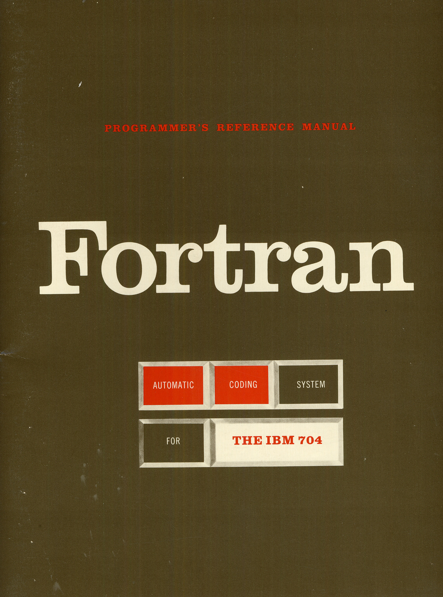

Frances Elizabeth Allen (August 4, 1932 - August 4, 2020) was a computer scientist and pioneer in the
field of optimizing compilers. In 1989, Fran was the first woman to become an IBM Fellow, and in 2006
became the first woman to win the Turing Award. Her achievements include seminal work in compilers,
program optimization, and parallelization. She worked for IBM from 1957 to 2002 and subsequently, was a
Fellow Emerita, providing technical guidance in her retirement.
Early Life 1932-1957
“All the things I do are of a piece. I'm exploring the edges, finding new ways of doing things. It keeps
me very, very engaged.”

The Fortran Automatic Coding System for the IBM 704 (15 October 1956), the first programmer's reference
manual for Fortran
After two years of teaching, Fran decided to continue her education and pursued her Master's degree in
mathematics at the University of Michigan. During her tenure at the university, one of the few
institutions teaching computer science in the 1950s, Fran took a handful of basic computing classes.
Fran learned that IBM was interviewing potential candidates on campus and signed up for an interview.
When offered a position, she envisioned herself working for IBM for just a year, mainly to help pay off
her loans from her Master's degree program and planned to return to teaching—a job that she loved.
Fran's first day at IBM Research was on July 15, 1957, just three months prior to IBM's introduction of
FORTRAN (FORmula TRANslation), the first high-level programming language.
Given Fran's background in teaching and the need to rapidly train Research division scientists in this
new, rather complex language, Fran's first job at IBM was to teach FORTRAN. Although she initially
planned to return to teaching after paying off her student loans, Fran ultimately remained at IBM for
the duration of her career.